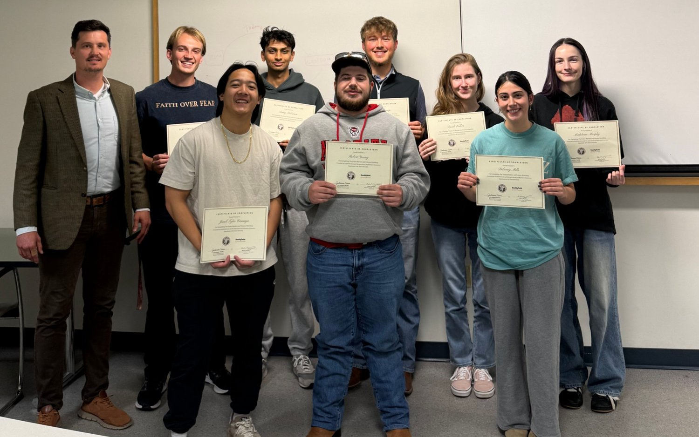

From a grain markets workshop to buying grain for Smithfield

Photo courtesy of Paige Smith
Paige Smith studied grain markets in an ABM workshop in March. Today she buys grain and feed ingredients for Smithfield.
Paige graduated from ABM in May 2026. She accepted a position with Smithfield Grain that April, while she was finishing the workshop. She is now an associate in the company’s Career Foundations Program, working in grain and ingredient procurement.
Six sessions with a Smithfield grain buyer
The Grain Markets and Futures workshop is taught by Matt Parker, who manages feed ingredient and grain procurement at Smithfield Foods. Students work with real data and real market conditions.
Paige said it covered hedging bushels on the Chicago Board of Trade, how basis and futures relate, and the part freight and logistics play in moving grain.
“Having that background knowledge made the transition into my role much smoother, because I already had a general understanding of the next phases of the business I was entering,” she said.
Knowing how a farmer thinks
The workshop also taught her how farmers decide when to sell and how they manage price risk. That turned out to matter as much as the market mechanics.
Take analytics, and get fast in Excel
“As difficult as it may be, analytics has been such a big part of my career thus far,” Paige said. “Being able to look at a set of data, analyze what you are looking at, and create a visual that represents the data is incredibly valuable.”
On Excel: “Being effective and efficient in Excel will also make you twice as marketable when looking for a job.”
She also recommends Agricultural Policy (ARE 433) and a macroeconomics course.
“One of my favorite classes”
Preston Burnop, an ABM sophomore, took the fall workshop, which ended Nov. 19. The first weeks covered worldwide and local grain markets, supply and demand, price risk management, and hedging.

Students with their certificates on the final day of the fall workshop, with Matt Parker of Smithfield Foods.
The sixth and final session is a simulation. Teams use realistic grain calculations and a volatile market to buy, sell, and move grain as a farmer, a grain elevator, or a feed mill.
If you want to take it
The workshop runs again next fall. It is six sessions of two hours each, limited to 20 to 25 students. If you attend every session, you earn a Certificate in Grain Markets and Futures and one credit hour toward a Restricted or Free Elective. You need ARE 201 or equivalent transfer credit first.